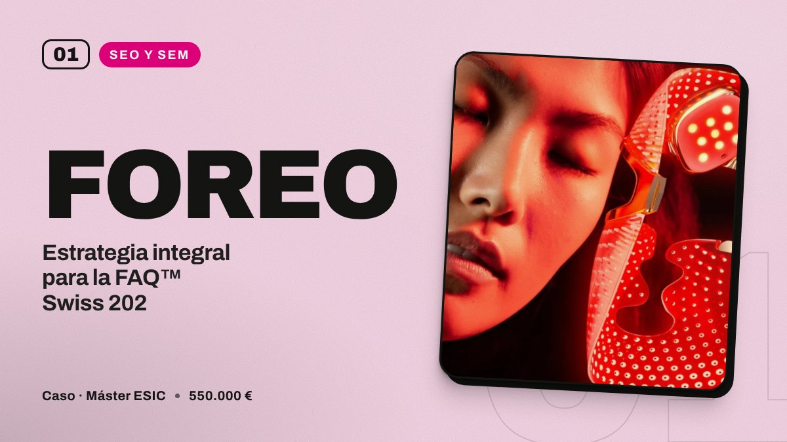

FOREO: que la máscara LED se encuentre.
Estrategia integral de SEO y SEM 2026 para la FAQ™ Swiss 202 de FOREO en España, con 550.000 €: frenar la caída orgánica, construir autoridad y captar demanda rentable en cada fase del funnel.
- Contexto
- Asignatura Relevancia Digital: SEO y SEM
- Mi papel
- Formé parte del equipo · agencia ficticia Osudemis
- Presupuesto
- 550.000 € para 2026
- Mercado
- España
La campaña, en la calle.
Así se vería en Google la búsqueda que el plan quiere ganar: anuncio arriba y la ficha orgánica de FOREO en el top-3.
Patrocinado
foreo.com › es › faq-202
FAQ™ Swiss 202 de FOREO | Máscara LED para tu rutina en casa
Tecnología LED de FOREO en formato máscara, pensada para usarla en casa.
foreo.com › es › mysa › como-funciona-mascara-led
Cómo funciona una máscara LED facial · MYSA by FOREO
Qué hace cada tipo de luz, cuánto dura una sesión y cómo encaja en tu rutina…
Top-3 orgánicoEl orgánico cae y el pago tapa el agujero.
keywords orgánicas perdidas en España
visitas orgánicas al mes
del tráfico orgánico depende de búsquedas de marca
para «máscara led facial», con 4.900 búsquedas al mes
El tráfico de pago ha pasado de 700 a 4.800 visitas al mes. Parte de la caída orgánica se está compensando con inversión, y la página del producto estrella apenas tiene autoridad (UR 5).
Fuente: auditoría del equipo con datos de Ahrefs para foreo.com/es.
SEO construye la demanda. SEM la acelera.
SEM, captar demanda · 53 %SEO off-page, autoridad · 36 %SEO on-page, base técnica · 11 %
Top-3 transaccional y ROAS rentable
Search, Performance Max y remarketing en los momentos de alta intención.
80+ backlinks de DA superior a 40
El off-page va primero: los enlaces de 2026 siguen funcionando en 2027 y 2028.
Cinco landings de consideración
Resolver las dudas del usuario dentro de la web y llevarlo a la ficha del producto.
Una arquitectura que lleva a la compra.
Autoridad que se acumula
5 contenidos que nadie domina
Buscadores con IA y control legal
Contenidos en formato pregunta-respuesta y datos estructurados para que Google, Gemini o Perplexity citen a FOREO, y revisión de cada mensaje según la normativa de la AEMPS para evitar promesas médicas y rechazos en Google Ads.
Cada fase, su campaña, su mensaje y su landing.
Display, YouTube y PMax
Innovación y respaldo científico. Se mide en alcance, CPV y VTR.
Search C1–C5 y remarketing
«Clínica frente a casa» y beneficios LED. Se mide en CTR, CPC y comportamiento en landing.
Search transaccional, marca y PMax
Compra con mínima fricción. Se mide en CPA, ROAS y ventas.
ROAS 4,34x · ≈812.700 € de ingresos
ROAS 5,44x · ≈1,58 M€ de ingresos
ROAS 5,58x · ≈2,51 M€ de ingresos
El last-click engaña. Con ese modelo, el SEO de captación parece devolver 0,55 € por euro. Con atribución data-driven devuelve 3,90 €, y el ROAS global real del plan es 5,44x.
Escenarios y forecast elaborados por el equipo con benchmarks de Google Ads España 2026.
Resultados que se pueden medir.
de búsquedas de marca, con influencers y PR
backlinks DA>40 en 12 meses
ROAS SEM en el escenario base
en keywords transaccionales y top-10 en las 5 landings
Q1Cimientos
Auditoría técnica, arquitectura y primeras landings
Q2Construcción
Resto de landings, informe de PR e influencers
Q3Aceleración
CTR, Core Web Vitals y escalado de Search y PMax
Q4Cosecha
Black Friday, Navidad y plan 2027
La presentación.
Haz clic en una diapositiva para verla en grande · usa ← → para pasar